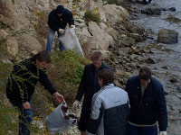
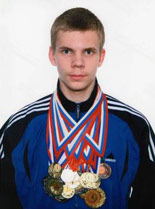

: : : Контакты |
|
Адрес: 403895 Волгоградская обл., г. Камышин, ул. Набережная, 11. Телефоны: 4-64-65, 4-48-37 |
Воспитательная работа
В настоящее время учебно-воспитательный процесс в школе строится с учетом возрастных и индивидуальных особенностей детей, предоставляя возможность каждому из них для самовыражения познавательной, коммуникативной, трудовой, игровой, эстетической деятельности, занятий спортом.
Основные воспитательные задачи:
- В 1-4 классах – создание условий для успеха, формирование ценностного отношения к нормам жизни групп, правилам поведения.
- В 5-6 классах – переориентация с детских норм поведения на взрослые.
- В 7-8 классах – создание необходимых условий для самоутверждения личности в коллективе с учетом ее возможностей, развитие уважительных отношений.
- В 9-11 классах – создание необходимых условий для социального определения на будущее, развитие диалектического взгляда на сущность вещей, явлений, преодоление нравственного максимализма, воспитание культа знаний, труда, здоровья, семьи.


Традиционными стали общешкольные мероприятия: фестиваль искусств «Звездный дождь», акция «Чистый берег», выставка цветов, день здоровья памяти Николая Ивановича Маслова, ветерана Великой Отечественной войны, который с 1945 по 1948 год был председателем городского комитета по делам физкультуры и спорта, а с 1948 по 1977 год проработал в школе №4 учителем физкультуры.
В 2007 году в энциклопедию «Одаренные дети – будущее России» был занесен ученик 8а класса Швыдкин Павел.
Он является:
- чемпионом Южного Федерального округа по классическим шахматам (2003г.)
- золотым призером чемпионата России по блицспринту (2005г.)
- участником чемпионата мира по шахматам среди школьников (2007г., Греция)
Завоевал 5 кубков, 21 медаль, имеет 90 почетных грамот и дипломов за участие в городских, областных, региональных соревнованиях и чемпионатах России по шахматам, бегу, плаванию, настольному теннису, силовому двоеборью.
С 2003 года школа является лидером среди школ города по туристско-краеведческой работе (руководитель В.А.Осипов), является победителем городских конкурсов «Безопасное колесо» и «Музей и дети».
На базе школы функционируют 24 кружка по разным направлениям деятельности, в которых занимаются 340 учеников.
| Направления деятельности | Количество кружков в общеобразовательных учреждениях | В них детей | % охвата учащихся кружковой работой (от общего числа учащихся 1-11 классов) |
| Художественно-эстетическое | 6 | 82 | 22% |
| Научно-техническое | 3 | 38 | 10% |
| Физкультурно-спортивное | 3 | 42 | 11% |
| Туристско-краеведческое | 1 | 41 | 11% |
| Эколого-биологическое | 2 | 31 | 8% |
| Естественнонаучное | 8 | 91 | 25% |
| Военно-патриотическое | 1 | 15 | 4% |
| Всего | 24 | 340 | 91% |


Результатом активной воспитательной работы является I место, занятое школой по итогам 2006-2007 учебного года, за участие в городских мероприятиях.
: : : Новости |
|
Текст |